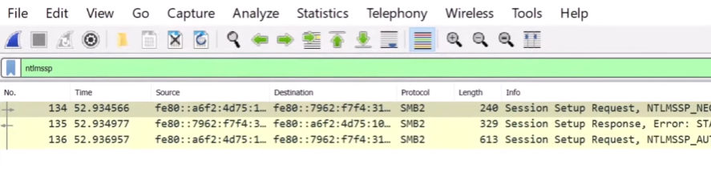
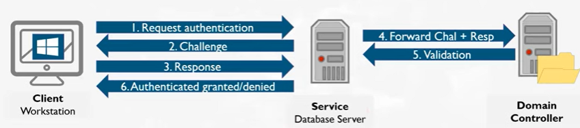
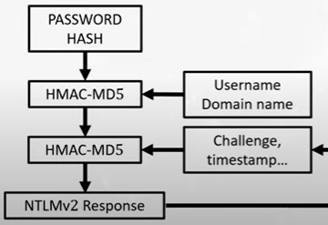
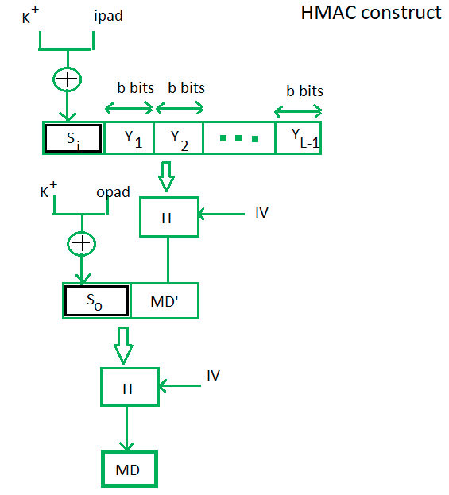

NTLM
- NT Lan Manager
- Only lets designated users access network resources
- collection of Microsoft authentication protocols
-
mutual authentication: both sides need to verify each other's
identity
- uses a challenge response protocol
NTLM Protocol
- client sends their username to the host
- host responds with a nonce (random number, i.e. the challenge)
-
user generates a hash with the concatenation of their password and nonce
and sends to the host
-
since the host already knows the user's password, they can compare to
the client's response
Extract NTLM hash from Wireshark
use filter "ntlmssp"
-
NTLMSSP_NETGOTIATE: Client will send request to authenticate
-
NTLMSSP_CHALLENGE: Host will send the challenge to the client
-
NTLMSSP_AUTH: client will send username and challenge response

Where to find NTLM info in SMB2 packets
- SMB2
- SMB2 Header
- Session Setup Response (0x01)
- Security Blob
- GSS-API
- Simple Protected Negotiation
- negTokenTarg
- NTLM Secure Service Provider
-
NTLM Server Challenge (for NTLMSSP_CHALLENGE) / NTLM Response (for
NTLMSSP_AUTH)
Information needed for hash cracking
- User: In NTLMSSP_AUTH
- Domain: In NTLMSSP_AUTH
- Challenge: In NTLMSSP_CHALLENGE
-
HMAC-MD5: "NTProofStr" in the NTLMv2 Response in NTLMSSP_AUTH
- NTLMv2Response: In NTLMSSP_AUTH
Cracking NTLM hash with hashcat
Hash file format
Note: use 5600 for NTLMv2 on hashcat
~$ cat hashes.txt
user::domain:challenge:HMAC-MD5:NTLMv2Response(with HMAC-MD5 removed from
first 32 chars)
~$ hashcat -a 0 -m 5600 hashes.txt
/usr/share/wordlists/kali-wordlists/rockyou.txt
SMB attacks using relaying and Responder
SMB Relaying
NTLMv2 authentication

NTLM Responses
Notes: Windows uses Kerberos today, NTLMv2 is still used today thoug

Obtain NTLMv2 Challenge/Response
Responder
-
What needs to happen?
- Need to get the username:domain, challenge, and response
- Need to lure someone into authenticating to us
-
NBT-NS: sends multicast message when you try to connect to a
hostname (like \\windows03), kind of like ARP for a hostname resolution
- LLMNR: modern updated version of NBT-NS
-
If someone tried to authenticate to a hostname that is not there then
Responder sends a fake NBT-NS/LLMNR packet to that someone so they will
reply with a request to authenticate
-
Other ways: listen on port 80 and wait for webdoc request, embed remote
image in word doc and wait for user to click on it
-
Bottom line: broadcast/multicast is what makes Responder possibl
responder -I interface
responder -I eth0
Responder Abusing WPAD
- "autodetect proxy settings"
- Creates an effective mitm attack
SMB relaying with responder
Relay attack

Relaying with Responder

HMAC
-
MAC: guarantee message sent over network has not been changed
-
Stream cipher encryption: Encrypts one bit at a time. Malicious
actor can flip bits in ciphertext to change the plaintext. Opposed to
block cipher encryption where message is encrypted in blocks and any
change in the ciphertext will drastically change the plaintext when
decrypted.
-
HMAC: immune to length extension attack
- Make a shared secret k
-
Make k1 and k2 from k
- k1 = k xor 0x36
- k2 = k xor 0x5c
- Hash1: message | k1
- Hash2: Hash1 | k2
